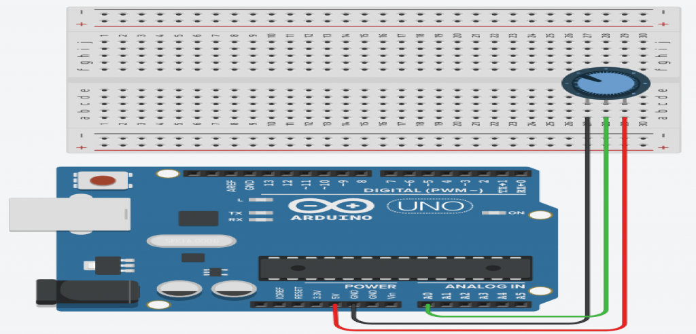

The potentiometer structure consists of a sliding contact (called wiper), a resistive element, electrical terminals, and a housing.
The sliding contact moves along the resistive element, while the housing consists of the wiper and the element.
Working: The fixed input voltage is applied across the two ends terminal of a potentiometer, which further produces the adjustable output voltage at the wiper or slider.
As the slider moves from one end to another, the divider can vary the output voltage from maximum to Ground.
Specifications
Type: Rotary a.k.a Radio POTAvailable in different resistance values like 500Ω, 1K, 2K, 5K, 10K, 22K, 47K, 50K, 100K, 220K, 470K, 500K, 1 M.
Power Rating: 0.3W
Ranging Distance : 2cm – 400cm/4m
Maximum Input Voltage: 200Vdc
Rotational Life: 2000K cycles

| On Sensor | On Raspberry | On Arduino |
|---|---|---|
| Vcc | 5v | |
| GND | GND | |
| Data | A0 |
It can be worked with
Working of potentiometer with Arduino Uno

#define POTENTIOMETER_PIN A0
void setup()
{
Serial.begin(9600);
}
void loop()
{
Serial.println(analogRead(POTENTIOMETER_PIN));
delay(100);
}
...
...